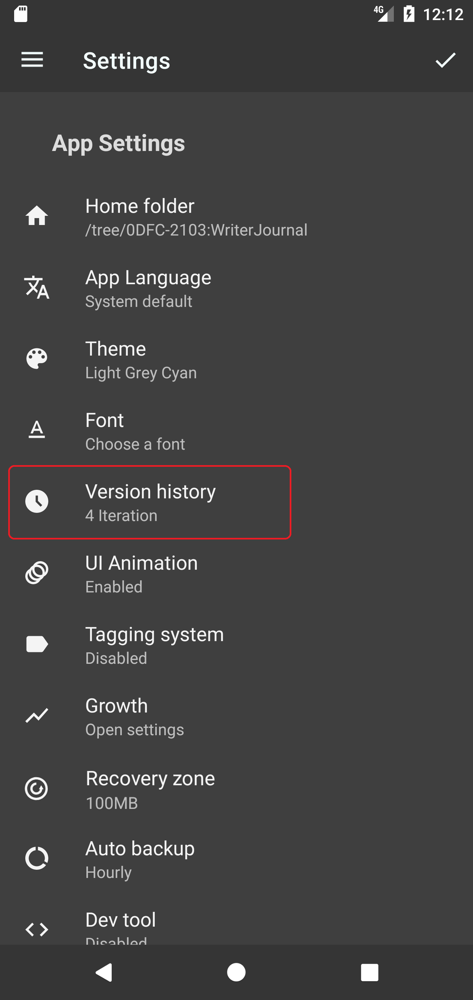
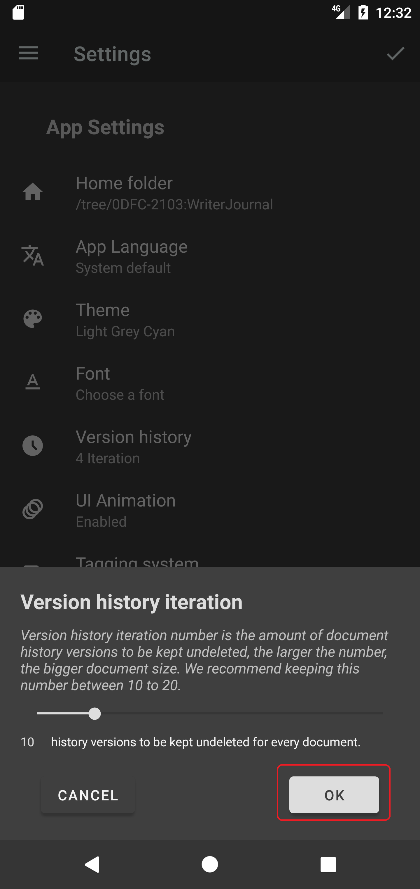

Version history is a feature that allows users to view and restore previous versions of a document. This feature can be very effective for various purposes, such as:
Tracking changes and revisions
Version history can help users see what changes were made to a document over time, when they were made. This can be useful for collaborative work, feedback, and accountability.
Recovering lost or unsaved work
Version history can help users recover their work in case of accidental deletion, corruption, or power outage. Users can restore their document to a previous version that was saved automatically or manually by the application.
Comparing and contrasting different versions
Version history can help users compare and contrast different versions of a document to see how it evolved, improved, or changed. Users can also use this feature to experiment with different ideas, styles, or formats without losing their original work.
Version history is a feature that can enhance the productivity, creativity, and security of users who work with Writer Journal. It can also save users time, effort, and frustration by allowing them to access and restore their previous work easily and quickly.
How to use version history feature in Writer Journal
Writer Journal keeps track of changes you made to each of your document, every time you made a change to one of your documents and hit 'save' or it gets auto saved, Writer Journal will make an extra copy of your document as a recoverable history version. And the maximum amount of history versions is 4 in free plan, 60 in premium plan.
You can adjust the maximum amount of history versions a document can have in the App settings page.
Please follow the steps below to adjust the number of maximum history versions to your preferred value. (See the screenshots)
How to recover a document to its older version in Writer Journal?
To recover your document to its older versions, please follow the steps below.